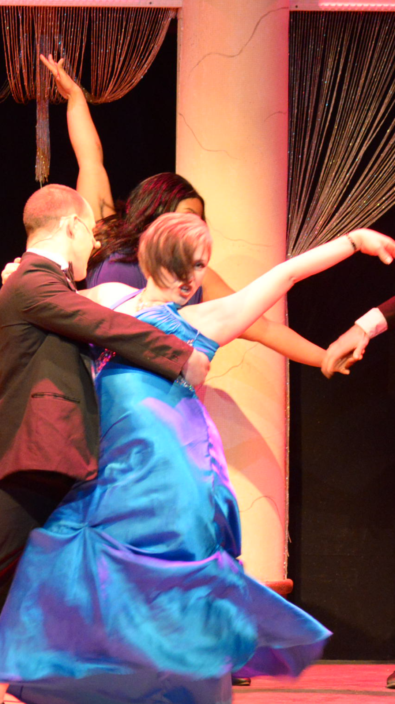

Aspiring product manager
Highly motivated and results-driven with an interest in Tech and
experience in people, production, and management. Skilled in
problem-solving, leadership abilities, and strategic thinking to
drive product development and deliver value. Seeking a challenging
role in a dynamic organization where I can utilize my analytical
mindset, strong empathy, and communication skills, as well as
expertise in organization to drive exceptional user experiences and
contribute to the success of the team.
Open to work in product management, product marketing and marketing
operations.
*Returning to the workforce after raising a family.
Here is some information about the Popeyes Kiosk project.
|
FBI (Fresh Breakers Inc) see 4:13 |
 |
|
|
|
|
|